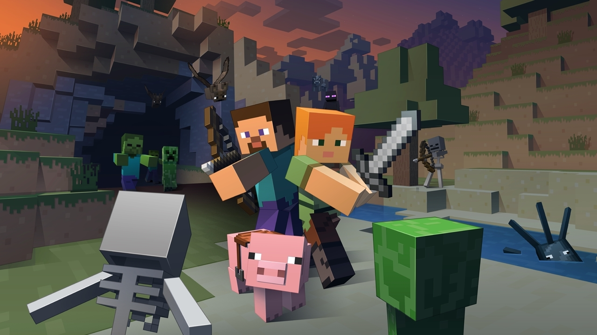

Jogos mais Vendidos
Carlos Goering
Além dos fails existem histórias de sucesso, como os consoles mais vendidos e os Jogos mais vendidos,
dentre eles estão jogos independentes e jogos de grandes desenvolvedoras.
A lista a seguir segue a quantidade de cópias vendidas.
Consoles
Tetris (495 milhões)
Jogo Tetris foi lançado em 1984 e foi desenvolvido por Alexey Pajitnov, está em praticamente todas as plataformas, e provavelmente foi esse o
motivo do jogo ser tão jogado até hoje.
Minecraft (107,86 Milhões)

O Minecraft é um jogo bem amplo onde o jogador pode criar a vontade, usando pistons o usuário consegue fazer projetos de por exemplo usinas,
eletrônicos como uma réplica de um GameBoy. O jogo foi lançado pela Mojang em 2011 e teve várias atualizações, continua sendo atualizado agora
com a Microsoft no comando, que comprou a Mojang em 2015, foi a Microsoft quem introduziu o Minecraft na educação, criando uma versão específica para escolas.
Wii Sports (82 milhões)

O jogo de esportes lançado para Wii pela Nintendo em 2006, foi o jogo que mais usou da versatilidade dos controles do console, o jogo
conseguiu agradar o público e se tornou um dos jogos mais vendidos e mais divertidos dos últimos tempos.
Grand Theft Auto V (75 milhões)

Lançado pela Rock Star a franquia GTA é bem conhecida e a 5ª versão do jogo é muito prestigiada, ela chegou no momento de troca
de geração de console, em 2013 e conseguiu mostrar todo o poder de processamento do Playstation 3 e do Xbox 360, o jogo também foi lançado para
a nova geração, Playstation 4 e Xbox One, dentre os pontos fortes do jogo estão a história a jogabilidade e o fato de que o jogo é muito bem renderizado, sem loads e sem muitos bugs.
Super Mario Bros. (40,24 Milhões)

O clássico jogo lançado para o Nintendo Entertainment System ou NES, foi lançado em 1985 e foi um jogo que popularizou o estilo plataforma, estilo muito
usado em futuras versões da franquia até mesmo o Super Mario Run lançado para iOS e Android usa uma mecânica parecida.
Mario Kart Wii (36,38 Milhões)
Jogo lançado em 2008 para Wii e que foca muito na diversão do usuário foi apresentado com um novo acessório para o console,
chamado Wii Wheel, parecido com um volante o que tornou o jogo ainda mais divertido e fácil de jogar.
Tetris (35 milhões)

Outra versão do previamente citado Tetris, este jogo foi lançado em 1989 e para o Game Boy e Game Boy Color, foi a primeira versão do Tetris a fazer sucesso.
Wii Sports Resort (32,80 Milhões)

Mais um jogo da Nintendo a alcançar o sucesso de vendas, foi lançado para Wii e teve uma grande aceitação do mercado, é a sequência do anteriormente citado Wii Sports.
New Super Mario Bros. (30,79)

Outro Sucesso da Nintendo, lançado para o Nintendo DS, o jogo leva o ótimo estilo plataforma do jogo para o portátil e com ótima jogabilidade.
The Elder Scrolls V: Skyrim / Diablo III (Ambos 30 milhões)
O último lugar desta lista, porém não menos importante, é dividido por dois jogos com jogabilidade diferente, porém o mesmo gênero RPG.
Popularmente conhecido somente como Skyrim faz parte da série The Elder Scrolls foi desenvolvido pela Bethesda Game Studios, lançado em 2011 é um jogo
bem consagrado, ganhou 6 prêmios e é considerado por muitos como um dos melhores jogos tanto por sua jogabilidade quanto pela história.
O Diablo III foi lançado em 2012 muitas vezes lembrado por ser um ótimo jogo, a versão brasileira é completamente traduzida a Blizzard Entertainment fez um ótimo trabalho.